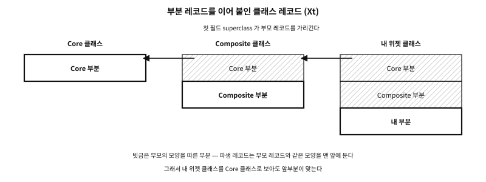

74 C 로 지은 객체들 — 사례와 논문
먼저 알아야 할 것
돌아보기
앞의 네 장에서 함수 포인터 표를 짓고, 상속을 잇고, 실행 때 표를 찾고, 그 비용을 쟀다. 이것들은 이 책이 처음 생각한 것인가?
답. 아니다. 거의 모두 수십 년 전에 누군가 C 로, 또는 C 위에서 지었다. Objective-C 는 C 에 메시지를 붙인 전처리기에서 시작했고, X 윈도의 위젯은 1980년대에 이미 부모를 먼저 초기화하는 클래스 레코드를 썼고, SQLite 는 판 번호를 단 표로 이십 년 가까이 버텼다. 그리고 그 비용을 잰 논문들이 있다. 이 장은 그것들을 둘러본다 — 쓰는 법이 아니라 무엇을 생각했는가를.
이 장의 필요성과 맥락
이 장이 끝나면
이 장에서 답할 질문
- C 를 내는 번역기와 C 로 짓는 흉내 가운데 무엇이 나은가?
74.1 C 위에 언어를 얹은 사람들#
C 로 객체를 흉내 내다 보면 누구나 한 번은 「이 반복을 기계가 대신 써 주면」 하고 생각한다. 그 생각을 끝까지 밀고 간 사람들이 있다. 결과는 둘로 갈렸다 — C 를 내는 번역기에 머문 것과, 끝내 다른 언어가 된 것.
- Cfront. Bjarne Stroustrup 은 1979년에 「C with Classes」를 시작하면서, 그것을 C 로 옮기는 전처리기를 먼저 지었다. 그 뒤를 이은 Cfront 는 C++ 를 C 로 번역했고, 1985년에 처음 바깥에 나갔다(그해 10월의 1.0 이 첫 상용 판이다).1 C++ 의 가상 함수 표는 처음에 C 의 구조체와 함수 포인터로 번역되었다 — 이 부에서 손으로 짓는 것을 번역기가 대신 지은 것이다.
- Cox 의 전처리기(OOPC). Brad Cox 는 ITT 에서 C 에 Smalltalk 의 메시지를 붙이는 전처리기를 지었다. 1983년 SIGPLAN Notices 의 글은 그것을 「Smalltalk-80 의 실행 관례를 따르는 C 프로그램을 내는 언어와 실행 라이브러리」라 적었다.2 이것이 Objective-C 가 되었다(다음 절).
- Schreiner 의 ooc. Axel-Tobias Schreiner 의 1993년 책 『Object-Oriented Programming with ANSI-C』는 클래스마다 하나씩 두는 설명 구조체(이 부의 표), 실행 때 함수를 고르는 호출, 단일 상속을 ANSI C 로 짓는다. 매번 똑같이 써야 하는 코드(상용구)는
awk로 만든 작은 전처리기ooc가 대신 써 준다. 목적은 가르치기였다 — 새 언어를 배우지 않고 객체 지향을 배운다. 이 부와 같은 일을 한 책이고, 지금도 읽을 만하다. - Vala. GNOME 의 Vala 는 C# 를 닮은 문법을 GObject 를 쓰는 C 로 옮긴다. 번역된 C 를 그대로 배포할 수 있어 따로 실행 라이브러리가 없고, C 쪽에서는 보통의 GObject 라이브러리로 보인다.3 GObject 의 상용구(아래)를 번역기가 대신 쓰는 길이다.
문. C 를 내는 번역기와 C 로 짓는 흉내 가운데 무엇이 나은가?
답. 번역기는 반복을 없애고, 사람이 틀릴 자리를 컴파일러의 검사로 바꾼다. 대신 도구가 하나 늘고, 오류 메시지와 디버거가 번역된 C 를 가리키며, 팀 전원이 그 언어를 배워야 한다. 75장의 「매크로로 클래스 선언 언어를 만들지 말라」는 경고는 매크로로 반쯤 만든 번역기를 겨냥한 것이다. 끝까지 만들 생각이면 Cfront 나 Vala 처럼 진짜 번역기를 만들고, 그럴 생각이 없으면 C 로 읽히는 흉내에 머문다.
74.2 Objective-C 를 조금#
Objective-C 는 Cox 와 Tom Love 가 세운 회사(Productivity Products International, 뒤의 Stepstone)에서 다듬어졌다. 1988년 NeXT 가 그 사용권을 얻어 NEXTSTEP 의 언어로 삼았고, NeXT 를 거쳐 Apple 의 macOS 와 iOS 에서 수십 년 동안 쓰였다. 카테고리와 프로토콜 같은 기능은 NeXT 시절에 더해졌다.4
이 부의 눈으로 보면 Objective-C 는 C 에 한 가지를 더한 언어다. C 의 코드는 그대로 받고, 그 위에 Smalltalk 의 메시지 보내기를 얹었다.
@interface Shape
- (double)area; /* 메서드 선언 */
@end
@interface Circle : Shape /* 상속 */
@end
@interface Circle (Describing) /* 카테고리: 이미 있는 클래스에 메서드를 더한다 */
- (void)describe;
@end
double total(Shape *s) { return [s area]; } /* 메시지 보내기 */마지막 줄의 [s area] 가 이 언어의 전부라고 해도 지나치지 않다. 컴파일러는 이 식을 런타임 함수 호출로 바꾼다. Apple 의 런타임에서는 objc_msgSend(s, @selector(area)) 다 — 수신자와 셀렉터를 주면, 그 함수가 메서드를 찾아 그리로 뛴다. 찾는 길은 72장의 lookup.c 그대로다. 객체의 머리에 있는 isa 로 클래스를 얻고, 그 클래스의 (셀렉터 → 함수) 캐시를 먼저 보고, 없으면 메서드 목록을 훑고 부모로 올라가 찾은 것을 캐시에 넣고, 끝내 없으면 메시지 포워딩으로 넘긴다.5
같은 문법이 런타임에 따라 다른 C 호출이 된다. 이 기계(x86-64 리눅스)의 Clang 19.1 은 기본으로 GCC 와 같은 GNU 런타임을 겨냥하고, 위의 total 을 objc_msg_lookup(s, sel) 로 함수를 얻은 뒤 그 함수로 뛰는 두 단계로 냈다. -fobjc-runtime=gnustep-2.0 이나 -fobjc-runtime=macosx-10.15 를 주면 objc_msgSend 하나로 냈다. 찾기와 부르기를 한 함수에 묶느냐 가르느냐의 차이다 — 어느 쪽이든 메시지는 C 의 함수 호출 하나다.
이 언어가 C 에 남긴 것은 셋이다.
- 메시지가 기본이다. 메서드 호출은 늘 실행 때의 찾기다. 그래서 클래스를 다시 컴파일하지 않고 메서드를 더하고(카테고리), 모르는 메시지를 다른 객체에 넘기는 일이 언어의 기본 기능이다. 컴파일 때 내용이 정해지는 표(정적 표)를 쓰는 C++ 와 정반대 끝이다.
- 찾기의 비용은 캐시로 줄였다. 클래스별 캐시가 대부분의 찾기를 해시 한 번으로 끝낸다 — 73장에서
selector, class cache줄로 잰 그 방법이다. - C 와 같은 컴파일러를 쓴다. GCC 와 Clang 은 C 컴파일러가 Objective-C 도 함께 받는다. 이 책의 C 는 C23 이고, Objective-C 가 C 의 새 판을 언제 어디까지 받는지는 컴파일러마다 다르다 — 「C 코드를 받는다」까지만 말해 둔다.
74.3 1980년대의 클래스 레코드 — X Toolkit Intrinsics#
X 윈도의 X Toolkit Intrinsics(Xt)는 위젯을 C 로 지은 객체 체계다. 1980년대 끝에 정해진 이 체계는 이 부의 거의 모든 부품을 이미 갖추고 있었다.6
- 위젯 클래스마다 클래스 레코드 하나 — 우리의 표다. 레코드의 첫 필드는 부모 클래스 레코드를 가리키는
superclass다. - 클래스 레코드는 부분 레코드를 차례로 이어 붙인 구조체다. 위젯은 공통 부분(Core), 그 아래 Composite, 그 아래 자기 부분 — 71장의 「기반 표를 품은 파생 표」를 여러 겹으로 한 것이다.
- 초기화는 두 가지로 갈린다.
class_initialize는 그 클래스에 대해 한 번, 사슬 없이 불린다.class_part_initialize는 사슬로 — 맨 위 조상부터 자기까지 차례로 — 불린다. 그래서 파생은 부모가 다 채운 뒤에 자기 부분을 손본다. - 인스턴스를 처음 만들기 전에 클래스가 초기화되었는지
class_inited깃발로 확인한다 — 게으른 짓기다.

그림 74.1 — Xt 의 클래스 레코드. 파생 레코드는 부모 레코드와 같은 모양을 맨 앞에 둔다.
부모를 먼저, 그다음 자기 — 72장의 다섯 단계 가운데 「채우기」의 순서를, 이 체계는 1980년대에 표준 문서로 적어 두었다.
74.4 GObject — 가장 큰 모범 사례#
GLib 의 GObject 는 C 로 지은 객체 체계 가운데 가장 크고 오래 쓰인 것이다. GTK 와 GNOME 의 수많은 프로그램이 그 위에 서 있고, Python·JavaScript·Rust 같은 다른 언어에서도 같은 객체를 부른다. 68장에서 뼈대를 보았으니, 여기서는 무엇을 잘했는가와 표를 어떤 순서로 짓는가를 본다.7
| 구조 | GObject 의 방식 |
|---|---|
| 상태와 표의 분리 | 모든 인스턴스 구조체는 첫 멤버로 GTypeInstance 를 두고, 그 첫 바이트들이 클래스 구조체를 가리킨다. 클래스 구조체(우리의 표)는 종류마다 한 벌 |
| 표의 상속 | 클래스 구조체는 그 종류의 첫 인스턴스가 만들어질 때 한 번 만들어지고, 부모 클래스 구조체를 복사해서 시작한다. 파생은 바꿀 칸만 덮어쓴다 |
| 상태의 상속 | 파생 인스턴스의 첫 멤버가 부모 인스턴스다 |
| 생성 | g_object_new 하나가 모든 종류를 만든다. 참조 계수는 1 로 시작 |
| 수명 | g_object_ref·g_object_unref. 계수가 0 이 되면 dispose 다음 finalize |
| 형 변환 | VIEWER_FILE(obj) 같은 검사하는 캐스트 매크로(틀리면 경고)와 VIEWER_IS_FILE(obj) 같은 종류 확인 매크로 |
| 상용구 | G_DECLARE_FINAL_TYPE 이 캐스트 매크로와 종류 확인 매크로를 선언하고, G_DEFINE_TYPE 이 …_get_type 함수와 부모 클래스 포인터를 만든다 |
표 74.1 — GObject 의 구조
잘한 점은 이 부의 원칙과 그대로 겹친다.
- 규약을 구조가 지킨다. 형 변환은 실행 때 종류를 확인하는 매크로를 거친다. 틀린 캐스트는 「invalid cast from … to …」 경고를 남긴다 — 다만 포인터는 그대로 돌려주므로 멈추지는 않는다. 그리고 지금의 GLib 소스에서 이 검사는
G_DISABLE_CAST_CHECKS나__OPTIMIZE__가 정의되면, 곧 최적화한 빌드에서는 그냥 캐스트가 된다. 검사는 시험 빌드의 그물이지 출시 빌드의 방어가 아니다. - 상용구를 손으로 쓰지 않는다. 종류 하나를 정의하는 반복적인 코드를 매크로 두 개가 만든다. 사람이 손으로 쓰다 틀릴 자리가 줄어든다.
- 해제를 두 단계로 가른다.
dispose는 쥐고 있던 다른 객체를 놓고,finalize는 자기 기억을 지운다. 객체 둘이 서로 쥐어 순환이 생겨도dispose에서 끊을 수 있다. 문서는dispose가 한 번 넘게 불릴 수 있다고 적는다 — 그래서 두 번 불려도 안전하게 짜는 것이 규약이다. - 실행 때 타입 체계가 있다. 종류마다 이름과 번호가 등록되어, 다른 언어의 바인딩이 그 정보를 읽어 같은 객체를 다룬다.
치르는 것도 분명하다. 종류 하나에 상용구가 수십 줄이고, 실행 때 타입 체계의 비용이 있고, 배우는 데 시간이 든다. 그리고 GObject 는 큰 객체 체계가 정말로 필요한 자리 — 수백 가지 위젯, 여러 언어의 바인딩, 수십 년의 호환 — 를 위한 것이다. 작은 라이브러리에 GObject 의 모양을 그대로 옮기면 그 비용만 옮겨 온다. 배울 것은 원칙이다.
74.4.1 표를 짓는 순서#
GObject 의 클래스 구조체는 72장의 동적 표다. 그 종류가 처음 쓰일 때 타입 체계가 짓는다. 순서는 이렇다.8
- 부모의 클래스 구조체를 먼저 짓는다(그것도 처음이라면).
- 새 클래스 구조체의 앞부분에 부모의 클래스 구조체를 복사한다. 덮어쓰지 않은 칸은 그래서 부모의 것이다.
- 조상들이 등록해 둔
base_init을 맨 위 조상부터 차례로 부른다. - 이 종류의
class_init을 부른다. 파생은 여기서 바꿀 칸만 덮어쓰고, 새 칸을 채우고, 속성과 신호를 등록한다.
72장의 build_table.c 가 한 일 — 부모를 먼저 짓고, 복사하고, 자기 칸을 덮는다 — 과 같은 순서다. 다른 점은 검증과 봉인이다. 타입 체계는 빈칸을 검사하지 않고 — 칸을 채울지는 저마다의 class_init 이 정한다 — 다 지은 클래스 구조체를 읽기 전용으로 바꾸지도 않는다.
74.5 파이썬의 타입 객체 — CPython#
CPython 의 모든 객체는 머리에 참조 계수와 타입 포인터를 둔다(PyObject 의 ob_refcnt 와 ob_type). 그 타입 포인터가 가리키는 PyTypeObject 는 tp_ 로 시작하는 칸이 수십 개인 표다 — 해시, 비교, 문자열로 바꾸기, 속성 찾기, 호출. C 로 새 타입을 지을 때는 바꿀 칸만 채우고 나머지는 NULL 로 둔 채 PyType_Ready 를 부른다. 그러면 그 함수가 부모 타입(tp_base)에서 빈칸을 물려받아 채운다.9
PyType_Ready 의 이 채우기는 70장의 「표의 빈칸」에 대한 또 하나의 답이다. NULL 칸을 부르는 쪽마다 확인하게 하지 않고, 한 번 짓는 자리에서 부모의 것으로 채운다 — 실행 때 하는 기본값 묶음이다.
74.6 커널의 표 — 리눅스와 FreeBSD#
리눅스 커널은 C 로 지은 가장 큰 객체 체계 가운데 하나다. 파일 시스템, 장치, 네트워크 규약마다 함수 포인터 표가 있다(file_operations, inode_operations, net_device_ops). Neil Brown 은 2011년 LWN 의 두 편의 글에서 그 패턴을 정리했다 — 함수 포인터만 든 표를 기본으로 하고, 표 포인터를 객체에 두고, 기반 구조체를 품은 객체에서 container_of 로 바깥을 되찾는다.10 70장의 「순수한 표」와 「표의 빈칸」도 그 글에 기댔다.
FreeBSD 의 kobj(9) 는 다른 길을 갔다. 클래스는 (메서드 이름표, 함수) 쌍의 목록을 내놓는다. 그 클래스가 처음 쓰일 때 커널이 그 목록을 빨리 찾을 수 있는 꼴로 바꿔 둔다 — 매뉴얼은 이것을 클래스를 「컴파일한다」고 부른다. 매뉴얼은 그 뒤의 디스패치가 「직접 함수 호출보다 조금만 비싸다」고 적는다 — 그들의 말이고, 이 책이 잰 것은 아니다.11 메서드를 이름표로 찾되 그 준비를 처음 한 번에 몰아 하는 길이다 — 셀렉터 찾기와 정적 표 사이의 자리다.
74.7 C 에서 쓰는 COM#
Microsoft 의 COM 은 언어와 무관한 객체 규약이다. 객체에 닿는 길은 인터페이스뿐이고, 인터페이스는 함수 포인터 표다. C 에서 보면 모든 COM 객체는 첫 멤버가 표 포인터(lpVtbl)인 구조체이고, 모든 표의 첫 세 칸은 늘 QueryInterface · AddRef · Release 다.12
/* C 에서 COM 객체를 부르는 모양 (Windows 헤더의 C 판) */
hr = obj->lpVtbl->QueryInterface(obj, &IID_IStream, (void **)&stream);
stream->lpVtbl->Release(stream);이 규약에서 주목할 것은 둘이다.
- 표와 수명을 한 계약에 묶었다. 모든 표의 첫 칸들에 참조 계수를 다루는 함수(
AddRef·Release)가 있다. 표가 있는 것이면 수명을 다스릴 줄 안다 — 71장의 수명 규약을 표의 모양으로 강제했다. - 인터페이스는 한 번 내놓으면 바꾸지 않는다. 새 기능은 새 인터페이스(새 IID)로 내고, 부르는 쪽은
QueryInterface로 그것이 있는지 묻는다. 칸을 끝에 붙이는 대신 표를 하나 더 만드는 판 관리다(72장의 「여러 인터페이스와 찾기」).
74.8 판을 견디는 표 — SQLite 와 OpenSSL#
SQLite 는 운영체제와 만나는 모든 일을 VFS 라는 표(sqlite3_vfs)로 돌린다. 표의 첫 칸은 판 번호 iVersion 이고, 문서는 「새 칸은 끝에 붙을 수 있고, 그때마다 iVersion 이 오른다」고 적는다. iVersion 은 SQLite 3.5.0 에서 1, 3.7.0 에서 2, 3.7.6 에서 3 이 되었다. SQLite 는 판 2 에서 더한 xCurrentTimeInt64 를 「iVersion 이 2 이상이고 그 칸이 NULL 이 아닐 때만」 부른다 — 아는 만큼만 읽고 나머지는 옛 길로 간다.13
부르는 쪽을 줄여 쓰면 이런 모양이다 — SQLite 의 코드가 아니라, 같은 규칙을 이 책이 다시 쓴 것이다.
struct vfs {
int version; /* 칸을 붙이면 오른다 */
int (*current_time)(struct vfs *, double *); /* 판 1: 날 수 */
int (*current_time_ms)(struct vfs *, long long *); /* 판 2 */
};
long long now_ms(struct vfs *v)
{
long long ms;
if (v->version >= 2 && v->current_time_ms && v->current_time_ms(v, &ms) == 0)
return ms; /* 새 칸을 아는 판 */
double days = 0;
v->current_time(v, &days); /* 옛 판의 길 */
return (long long)(days * 86400000.0);
}판 1 의 표에는 current_time_ms 칸이 아예 없다. 그래서 판 번호를 먼저 보고, 그 칸이 있는 판일 때만 칸을 읽는다.
같은 문서에는 규칙을 어긴 기록도 있다. 문서는 「실수로」 3.6.0 에서 이 구조체가 바뀌었는데 iVersion 은 오르지 않았다고 적는다. 판 번호만 보고는 3.6.0 앞뒤의 구조체 모양을 가릴 수 없다는 뜻이다. 크기나 판 번호를 적어 두라는 71장의 규칙이 왜 규칙이어야 하는지 — 한 번 어기면 그 번호를 다시는 온전히 믿을 수 없다 — 를 실제 프로그램이 보여 준다.
OpenSSL 3 은 판 문제를 다르게 풀었다. 공급자는 함수를 OSSL_DISPATCH — (함수 번호, 함수 포인터) 쌍 — 의 배열로 내놓는다. 받는 쪽은 모르는 번호를 건너뛴다. 그래서 한 판의 OpenSSL 에 맞춰 지은 공급자가 다른 판과도 맞물린다. 칸의 자리가 없으므로 「끝에만 붙인다」는 규칙이 필요 없다. 비용은 찾기다 — 쓰기 전에 배열을 훑어 번호를 맞춘다. 배열의 끝 표시는 3.0 의 문서에서는 번호 0 과 NULL 의 쌍이었고, 3.3 의 문서부터는 OSSL_DISPATCH_END 매크로로 적는다.14
74.9 다른 생각들 — 라이브러리와 실험#
이 부는 「표 하나, 객체 하나」의 모양을 따랐다. 그 밖으로 나간 시도들이 있다. 쓸 만한가보다 무엇을 시험했는가로 본다.
- COS(C Object System). CERN 의 Laurent Deniau 가 지은 COS 는 Common Lisp 의 객체 체계(CLOS)와 Objective-C 의 생각을 C99 전처리기만으로 짓는다. 그 가운데 가장 눈에 띄는 것이 다중 메서드다.15 다중 메서드는 첫 인자 하나가 아니라 여러 인자의 종류로 함수를 고른다. 「원과 사각형이 부딪힐 때」를 원의 표에도 사각형의 표에도 두지 않고 그 쌍에 둔다 — 이 절 끝의 표에서 칸 하나가 함수 하나다. 이 부의 다른 어디에도 없는 생각이다 — 표가 객체에 붙는다는 가정 자체를 버렸다.
- Piumarta · Warth 의 열린 객체 모델. Ian Piumarta 와 Alessandro Warth 는 객체 타입 셋과 메서드 다섯만으로, 스스로 확장할 수 있는 객체 모델과 메시지 의미를 세울 수 있음을 보였다.16 부록에 GNU C 로 쓴 구현이 있고, 핵심 객체와 메서드는 140줄이다. 주목할 생각은 표도 객체라는 것이다 — 메서드를 찾는 일 자체가 메시지이므로, 찾는 방법을 실행 때 바꿀 수 있다. 같은 논문은 호출 자리마다 지난번 결과를 기억하는 인라인 캐시를 매크로 하나로 보인다 — 73장에서 잰 그 생각이다.
- Cello. Daniel Holden 의 Cello 는 C 위에 인터페이스, 생성자와 소멸자, 예외, 선택적 쓰레기 수집, 반사를 얹은 라이브러리다(반사는 실행 중에 값의 타입 정보를 묻는 기능이다). 지은이는 「C 를 한계까지 해킹하면 어떻게 보이는지 보는 재미있는 실험」이라 부르고, 큰 제품에 쓰기 전에 취미 프로젝트로 먼저 써 보라고 권한다.17 Cello 는 타입 정보를 담은 머리를 포인터가 가리키는 자리 바로 앞의 메모리에 숨겨 둔다. 지은이는 이것을 「뚱뚱한 포인터」라 부르지만, 커진 것은 포인터가 아니라 그 앞의 메모리다 — 포인터는 보통 크기 그대로다. 72장의 뚱뚱한 포인터(포인터 둘)와 이름만 같고 모양은 반대다.18
줄은 a, 열은 b | 원 | 사각형 |
|---|---|---|
| 원 | hit_circle_circle | hit_circle_rect |
| 사각형 | hit_rect_circle | hit_rect_rect |
표 74.2 — 다중 메서드 — 두 인자의 종류로 함수를 고른다
객체마다 표 하나를 두는 디스패치라면 hit(a, b) 는 a 의 표만 보고 고르고, b 의 종류는 그 함수 안에서 다시 switch 로 가려야 한다. 다중 메서드는 두 종류를 한 번에 보고 칸을 찾는다.
74.10 디스패치를 잰 논문#
73장의 측정은 이 기계 하나의 것이다. 같은 물음을 먼저, 더 넓게 물은 논문들이 있다. 그들의 수는 그들의 기계와 그해의 것이라 옮기지 않고, 무엇을 물었는지만 적는다.
- Deutsch · Schiffman, POPL 1984. Smalltalk-80 을 빠르게 구현하면서 인라인 캐시를 내놓았다 — 호출 자리의 수신자는 지난번과 같은 클래스일 때가 많다는 관찰.
- Hölzle · Chambers · Ungar, ECOOP 1991. 한 자리에 클래스 몇 개를 기억하는 다형 인라인 캐시. 논문은 그 캐시에 모인 종류의 기록을 메서드를 다시 컴파일할 때 쓰는 적응형 컴파일(adaptive compilation)도 함께 제안했다.
- Driesen · Hölzle, OOPSLA 1996. 「The Direct Cost of Virtual Function Calls in C++」.19 실제 C++ 프로그램을, 모든 가상 호출을 직접 호출로 바꿨다고 가정한 판과 견주어 표를 거치는 비용을 쟀고, 프로세서의 어떤 성질이 그 비용을 좌우하는지 프로세서 시뮬레이터로 물었다. 캐시 효과 같은 간접 비용은 일부러 뺐다 — 무엇을 재지 않았는지 밝힌 것이 이 논문의 미덕이다.
- Zendra · Colnet · Collin, OOPSLA 1997. 「Efficient Dynamic Dispatch without Virtual Function Tables: The SmallEiffel Compiler」.20 C 를 내는 Eiffel 컴파일러가 타입 추론으로 호출 자리마다 가능한 종류를 줄이고, 표 대신 종류 번호를 가르는 이진 분기 코드를 냈다. 73장의
binary branches줄이 이 생각이다 — 이 기계에서는 섞인 종류에서 가장 나빴다는 것도 함께 적어 둔다. 기계와 해가 다르면 답이 다르다.
74.11 사례에서 주목할 생각 — 한 표로#
| 생각 | 처음 보인 곳(이 장) | 이 부의 자리 |
|---|---|---|
표를 객체와 가르고 const 로 | 커널의 표, Xt 의 클래스 레코드 | 70장의 세 덩어리 |
| 빈칸을 짓는 자리에서 채우기 | CPython 의 PyType_Ready | 70장의 표의 빈칸 |
| 기반 표를 품은 파생 표 | Xt 의 부분 레코드, GObject 의 클래스 구조체 | 71장의 상속 |
| 부모 먼저, 그다음 자기 | Xt 의 class_part_initialize, GObject 의 class_init | 72장의 다섯 단계 |
| 표와 수명을 한 계약에 | COM 의 IUnknown | 71장의 수명 |
| 판 번호를 단 표 | SQLite 의 iVersion (그리고 그것을 어긴 3.6.0) | 71장의 크기 · 판 번호 필드 |
| 번호로 맞추는 칸 | OpenSSL 3 의 OSSL_DISPATCH | 72장의 판이 바뀌는 표 |
| 인터페이스를 따로 묻기 | COM 의 QueryInterface | 72장의 여러 인터페이스 |
| 이름으로 찾고 캐시 | Objective-C 의 objc_msgSend | 72장의 셀렉터 |
| 처음 한 번 표로 굳히기 | FreeBSD kobj 의 클래스 컴파일 | 72장의 itab |
| 호출 자리의 캐시 | Deutsch · Schiffman, Hölzle 외 | 73장의 인라인 캐시 |
| 표 없는 디스패치 | Zendra 외의 SmallEiffel | 73장의 이진 분기 |
| 여러 인자로 고르기 | COS 의 다중 메서드 | — (이 부 밖의 생각) |
| 표도 객체 | Piumarta · Warth | — (이 부 밖의 생각) |
표 74.3 — 이 부의 생각들과 그 처음
74.12 정리#
| 주제 | 요점 |
|---|---|
| C 위의 언어 | Cfront 는 C++ 를 C 로, Cox 의 전처리기는 Smalltalk 의 메시지를 C 로(뒤의 Objective-C), Vala 는 C# 를 닮은 문법을 GObject C 로. 반복을 기계가 쓰는 길 — 끝까지 만들거나 만들지 않거나 |
| Objective-C | C 에 메시지 보내기 하나를 더했다. [s area] 는 런타임의 함수 호출(objc_msgSend 또는 objc_msg_lookup), 찾기의 비용은 클래스별 캐시가 줄인다 |
| Xt | 1980년대의 클래스 레코드: superclass, 부분 레코드, 한 번 초기화와 사슬 초기화 |
| GObject | 규약을 매크로와 실행 때 검사가 지킨다. 클래스 구조체는 부모를 복사하고 덮는 동적 표 |
| CPython | NULL 칸을 PyType_Ready 가 부모의 것으로 채운다 |
| 커널 | 리눅스는 순수한 표와 container_of, FreeBSD kobj 는 메서드 목록을 처음 쓸 때 찾기 좋은 꼴로 바꾼다 |
| COM | 모든 표의 첫 칸들이 수명(참조 계수)을 다룬다. 인터페이스는 바꾸지 않고 하나 더 만든다 |
| SQLite · OpenSSL | 판 번호를 단 표와 그것을 어긴 기록, 번호로 맞추는 칸 |
| 실험과 논문 | 다중 메서드, 표도 객체. 인라인 캐시, PIC, 가상 호출의 직접 비용, 표 없는 디스패치 — 수는 그들의 기계의 것 |
표 74.4 — C 로 지은 객체들 — 한 줄씩
남들이 지은 것을 둘러보았으니, 남은 물음은 하나다 — 언제 멈추는가. 마지막 장은 매크로와 원칙과 객체 지향 자체의 한계를 재고, 이 부를 처음 생각으로 돌려 닫는다.
주
- Computer History Museum, 「C++ Historical Sources Archive」(softwarepreservation.computerhistory.org/c_plus_plus). ↩
- B. J. Cox, 「The Object Oriented Pre-Compiler: Programming Smalltalk 80 Methods in C Language」, SIGPLAN Notices 18(1):15–22, 1983. ↩
- GNOME Wiki, 「Projects/Vala/About」. ↩
- B. J. Cox, S. Naroff, H. Hsu, 「The Origins of Objective-C at PPI/Stepstone and Its Evolution at NeXT」, HOPL IV, Proc. ACM Program. Lang. 4(HOPL), 2020. ↩
- Apple, 「Objective-C Runtime Programming Guide」 가운데 「Messaging」. 캐시를 보는 기계어는 M. Ash, 「Friday Q&A 2017-06-30: Dissecting objc_msgSend on ARM64」. ↩
- X Consortium, 「X Toolkit Intrinsics — C Language Interface」(X11R7.7 판)의 「Widget Classes」 장. ↩
- GObject 문서 「Type system concepts」(docs.gtk.org/gobject/concepts.html). ↩
- GObject 문서 「Type system concepts」 가운데 「Instantiatable classed types: objects」. ↩
- Python 문서, 「Type Object Structures」(c-api/typeobj). 칸마다 물려받는 규칙이 표로 있다 — 판에 따라 다르다. ↩
- N. Brown, 「Object-oriented design patterns in the kernel」, part 1 · 2, LWN.net, 2011-06. ↩
- FreeBSD,
kobj(9). 장치 드라이버 틀 newbus 가 그 위에 서 있다. ↩ - Microsoft Learn, 「COM Objects and Interfaces」, 「The IUnknown Interface」. ↩
- SQLite, 「OS Interface Object」(c3ref/vfs.html). ↩
- OpenSSL 문서,
OSSL_DISPATCH(3), 3.0 판과 3.3 판. ↩ - L. Deniau, 「The C Object System: Using C as a High-Level Object-Oriented Language」, arXiv:1003.2547, 2010. ↩
- I. Piumarta, A. Warth, 「Open, Extensible Object Models」, Self-Sustaining Systems(S3 2008), 2008. 줄 수는 VPRI 가 낸 판(objmodel2.pdf)의 본문에서 확인했다. ↩
- D. Holden, Cello 의 소개(libcello.org)와 저장소의 README. ↩
- D. Holden, 「A Fat Pointer Library」(libcello.org/learn). ↩
- K. Driesen, U. Hölzle, OOPSLA 1996, 306–323. ↩
- O. Zendra, D. Colnet, S. Collin, OOPSLA 1997, 125–141. ↩